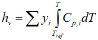
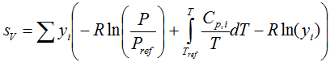
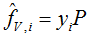
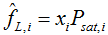
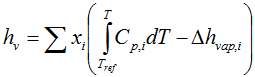
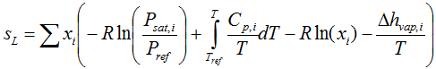
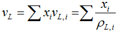

This document describes an example thermodynamic server. The intent is to demonstrate how CAPE-OPEN thermodynamics function, rather than to describe how to write a high-end thermodynamics server. As such, the thermodynamics calculations are minimal. The following sections describe the thermodynamic calculations.
The following data are requires for each compound:
Exposed temperature dependent properties correspond to the above correlations. No pressure dependent properties are exposed. The calculations are only allowed for sub-critical temperatures (see liquid phase description) so only compounds that are sub-critical at reference conditions are available.
For simplicity, all correlations have the same format: a 4th order polynomial. An exception is the vapor pressure correlation, which takes the form of the Antoine equation. Temperature limits will not be included; correlations are assumed valid over the entire temperature range. For all correlations, the temperature derivative, the temperature integral and the integral of the property divided by temperature can be evaluated explicitly.
The following mixture properties are provided:
Of these properties, all derivatives are provided (with respect to temperature, pressure, mol fractions and mole numbers).
The vapor phase is governed by the ideal gas law (PV = RT). The enthalpy reference state is in the (ideal) vapor phase at Tref = 298.15 K. Reference pressure is required for entropy, and is Pref = 101325 Pa. Volume and density of the vapor phase follow from the ideal gas law. Enthalpy of the vapor phase follows from

Entropy of the vapor phase follows from

Fugacity coefficient of all components is unity, corresponding to an ideal gas. Fugacity for the vapor phase therefore is:

The liquid phase is ideal, with activity coefficients of unity. The system is intended to be used for T < Tcrit,i for all compounds, so that all vapor pressures are finite and positive. Calculations that violate this constraint result an error.
Poynting correction and saturated fugacity coefficients are ignored, so that the liquid phase fugacity is given by

where the saturated vapor pressure only depends on temperature. The liquid phase enthalpy follows from:

The liquid phase entropy follows from:

The liquid phase volume is ideal:

and the liquid phase density follows from ρL = 1/vL.
Only the vapor and liquid phases are provided. Only a single liquid phase is supported. The following flash specifications are supported:
As the vapor phase enthalpy does not depend on pressure, and none of the liquid phase properties depend on pressure, the T-h and T-s are not provided.
Vapor-liquid equilibria are calculated at given T and P from:
The T-FV flash for FV = 0 or FV = 1 is solved as a dew- or bubble-point problem. For 0 < FV < 1, a one dimensional problem is solved for which the pressure is adjusted so that the TP flash returns the desired vapor fraction.
Similarly, the P-FV flash for FV = 0 or FV = 1 is solved as a dew- or bubble-point problem. For 0 < FV < 1, a one dimensional problem is solved for which the temperature is adjusted so that the TP flash returns the desired vapor fraction.
The P-h and P-s, a one dimensional problem is solved for which the temperature is adjusted so that the TP flash returns a mixture with proper overall enthalpy or entropy.
The above flash descriptions will cause trouble for single compounds, due to the discontinuity at the boiling point. Therefore, single-compound flashes are detected and handled with separate algorithms:
Configuration files are present for Hexane, Octane, Decane and Dodecane. Each of the compounds is described in a compound data file. This is a fixed-format text file with each line containing a property, or coefficients to a correlation, in a fixed order. The compound file name corresponds to the compound ID. The compound input files are located in a sub-folder “Data” of the CAPE-OPEN component installation folder.
The CAPE-OPEN component implements a Property Package Manager (CAPE-OPEN version 1.1) and a Thermo System (CAPE-OPEN version 1.0). This requires configuration of Property Packages. A Property Package configuration consists only of a selection of compounds. Property Package configurations are stored in text files consisting of one compound ID per line. The Property Package configuration files are located in a sub-folder “CO-LaN_IdealThermoExample” of the user’s roaming data folder. If this folder does not exist, it is automatically created and populated with a few sample property package files. These sample files are located in a sub-folder “Data” of the CAPE-OPEN component installation folder.
At the root of all calculations is the thermodynamic module. This is implemented in a separate DLL which is shared between the version 1.0 and 1.1 CAPE-OPEN software components. This DLL implements a routine to load a Property Package configuration and perform calculations using this configuration. This DLL is written in C++.
A separate utility executable is present to edit the property package configuration files. The functionality of this executable includes: adding property package configurations, deleting existing property package configurations and editing property package configurations. Editing property package configurations is as simple as selecting compound definitions from the compound files in the installation. This utility is written in C++.
A CAPE-OPEN version 1.0 Thermo System is available. This is implemented as a Microsoft Visual C++ based COM DLL, using ATL and STL as support libraries (requires Microsoft Visual Studio 2005 Professional or higher). This CAPE-OPEN component contains a Thermo System and a Property Package implementation. The Thermo System implements:
In addition to standard Thermo System functionality, the ICapeUtilities interface implements a means to edit the collection of Property Packages.
The Property Package component will use the thermodynamic module for its calculations, and implements:
In addition to standard Property Package functionality, the ICapeUtilities interface implements a means to edit the Property Package and add or remove compounds. The Property Package configuration can be saved via the Persistence interfaces. The CAPE-OPEN component is self-registering. Registration is performed on a per-user basis.
A CAPE-OPEN version 1.1 Property Package Manager is available. This is implemented as a Microsoft Visual C++ based COM DLL, using ATL and STL as support libraries (requires Microsoft Visual Studio 2005 Professional or higher). This CAPE-OPEN component contains a Property Package Manager and a Property Package implementation. The Property Package Manager implements:
In addition to standard Property Package Manager functionality, the ICapeUtilities interface implements a means to edit the collection of Property Packages.
The Property Package component uses the thermodynamic module for its calculations, and implements:
In addition to standard Property Package functionality, the IcapeUtilities interface implements a means to edit the Property Package and add or remove compounds. The Property Package configuration can be saved via the Persistence interfaces. The CAPE-OPEN component is self-registering. Registration is performed on a per-user basis.
A CAPE-OPEN version 1.0 Thermo System is available. This is implemented as a Microsoft Visual Basic 6.0 based COM DLL. This CAPE-OPEN component contains a Thermo System and a Property Package implementation. The Thermo System implements:
In addition to standard Thermo System functionality, the ICapeUtilities interface implements a means to edit the collection of Property Packages.
The Property Package component uses the thermodynamic module for its calculations, and implements:
Persistence is implemented via standard VB6 functionality and IPersistStreamInit is implemented implicitly.
In addition to standard Property Package functionality, the ICapeUtilities interface implements a means to edit the Property Package and add or remove compounds. The Property Package configuration can be saved via the Persistence interfaces. In addition to self-registration, CAPE-OPEN registration will be performed by means of a separate .reg file. Registration is performed for all users.
A CAPE-OPEN version 1.1 Property Package Manager is available. This is implemented as a Microsoft Visual Basic 6.0 based COM DLL. This CAPE-OPEN component contains a Property Package Manager and a Property Package implementation. The Property Package Manager implements:
In addition to standard Property Package Manager functionality, the ICapeUtilities interface implements a means to edit the collection of Property Packages.
The Property Package component use the thermodynamic module for its calculations, and implements:
Persistence is implemented via standard VB6 functionality and IPersistStreamInit is implemented implicitly.
In addition to standard Property Package functionality, the IcapeUtilities interface implements a means to edit the Property Package and add or remove compounds. The Property Package configuration can be saved via the Persistence interfaces. In addition to self-registration, CAPE-OPEN registration will be performed by means of a separate .reg file. Registration is performed for all users.
In addition to this documentation, documentation of the C++ components (thermodynamic module, property package configuration editor, C++ Thermo System, C++ Property Package Manager) are provided using the Doxygen documentation system.
The Visual Basic code is documented only by means of in-line comments.
An installer is provided that installs one or more of the following components: